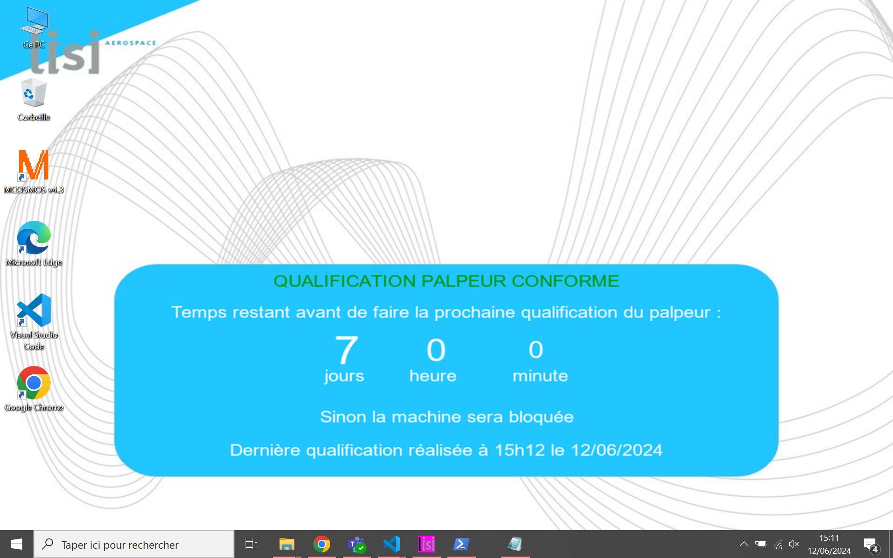
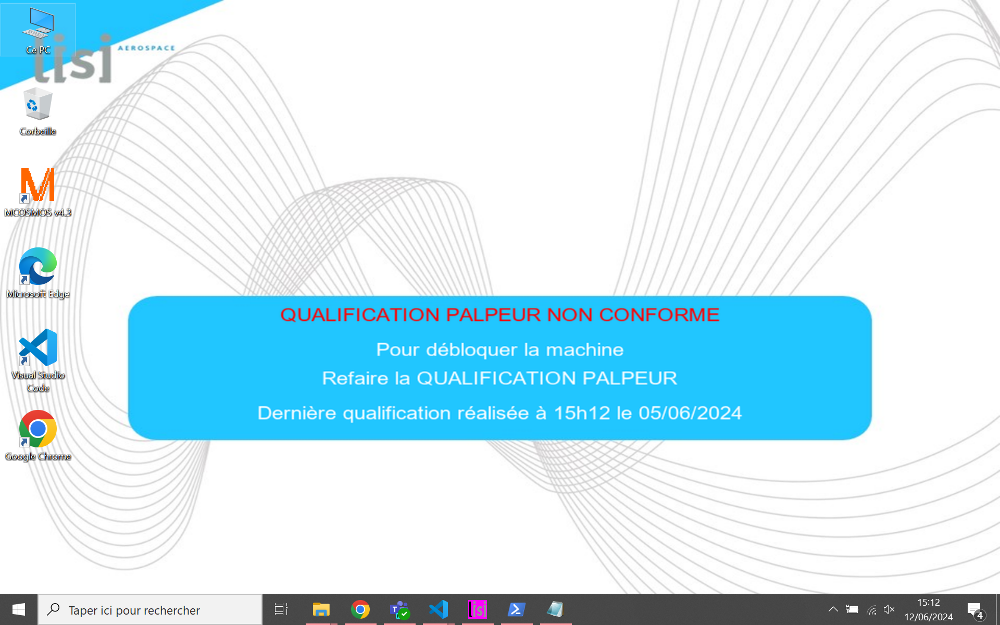

Description :
J'ai créé un fond d'écran animé pour afficher des rappels de qualifications de machine sur l'ensemble des PC de mesures de l'atelier. Ce projet, bien qu'encore en cours de déploiement, est conçu pour inciter le personnel à réaliser les qualifications avant la non-conformité de la machine. Cela nécessite la lecture de fichiers du PC pour récupérer la date et l'état de la dernière qualification de machine.
Preuves :
Fonds d'écran conforme

Fonds d'écran non conforme

Extrait de code :
def read_start_date_from_config():
config = ConfigObj(cheminDonnees + 'DATECALIB.str')
date_str = config['DATECALIB']
return datetime.strptime(date_str, '%Y-%m-%d %H:%M:%S')
def read_conformite_from_config():
config = ConfigObj(cheminDonnees + 'STATECALIB.str')
conformite = config['STATECALIB']
return conformite
def add_text_to_image(image_path, text, save_path, jours, heures, minutes):
try:
img = Image.open(image_path)
draw = ImageDraw.Draw(img)
font = ImageFont.truetype("arial.ttf", 20)
width, height = img.size
y_offset = height / 2.05
lines = text.split('\n')
for line in lines:
fill_color = (255, 255, 255)
textwidth, textheight = draw.textbbox((0, 0), line, font=font)[2:]
x = (width - textwidth) / 2
if line.startswith("QUALIFICATION PALPEUR CONFORME"):
fill_color = (0, 150, 0)
elif "A réaliser avant" in line:
fill_color = (255, 0, 0)
elif "QUALIFICATION PALPEUR NON CONFORME" in line:
fill_color = (255, 0, 0)
if jours in line and heures in line and minutes in line:
font_jours = ImageFont.truetype("arial.ttf", 50)
font_heures = ImageFont.truetype("arial.ttf", 40)
font_minutes = ImageFont.truetype("arial.ttf", 30)
x2 = x
y2 = y_offset
bbox = draw.textbbox((x2, y2), jours, font=font_jours)
draw.text((x2, y2), jours, font=font_jours, fill=fill_color)
x2 += bbox[2] - bbox[0] + 10
bbox = draw.textbbox((x2, y2), heures, font=font_heures)
draw.text((x2, y2+5), heures, font=font_heures, fill=fill_color)
x2 += bbox[2] - bbox[0] + 10
bbox = draw.textbbox((x2, y2), minutes, font=font_minutes)
draw.text((x2, y2+10), minutes, font=font_minutes, fill=fill_color)
y_offset += textheight + 1
else:
draw.text((x, y_offset), line, font=font, fill=fill_color)
y_offset += textheight + 10
img.save(save_path)
except Exception as e:
print(f"Failed to update wallpaper: {e}")
Analyse :
Pour développer ce programme, j'ai utilisé Python pour lire les dates de qualification et les états de conformité des machines, depuis des fichiers de configuration locaux au format ".str" (texte). Le code extrait montre comment ces informations sont récupérées et utilisées pour créer une image de fond d'écran dynamique. Ce projet démontre ma compétence à utiliser Python pour automatiser des tâches complexes et améliorer la conformité des processus en fournissant des informations en temps réel aux utilisateurs.